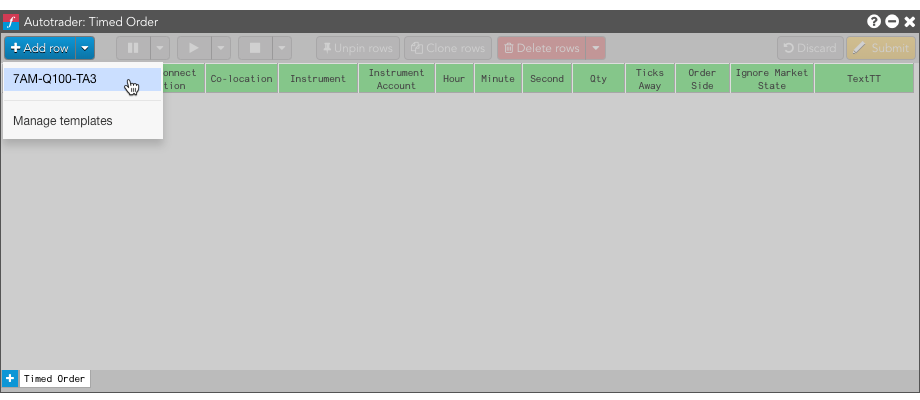
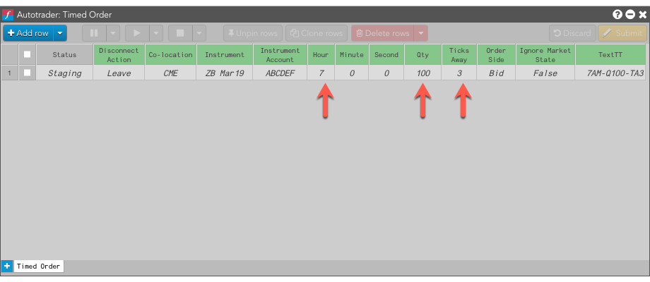

Using an algo template
To use a template for an algo:
- Select an algo in the Autotrader widget.
-
From the + Add row drop-down menu, select the template to use.

An instance is added populated with the values defined in the template.
- Make any desired changes to the algo parameters.
-
Click
 to start the algo instance with the selected template.
to start the algo instance with the selected template.